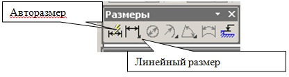
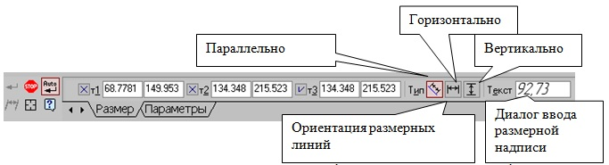
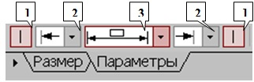
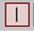
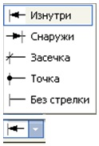
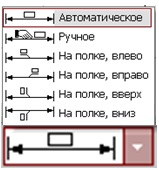
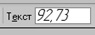
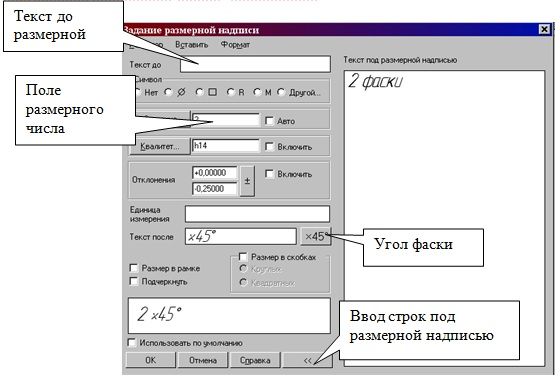
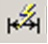

<!DOCTYPE HTML>
<html>
<head>
<meta name="keywords" content="Компас, Компас 3D,Комп'ютерна графіка,Compass">
<meta name="description" content="Методичний посібник по Компас 3D">
<meta http-equiv="content-type" content="text/html; charset=utf-8">
<title>ЛІНІЙНІ РОЗМІРИ</title>
<link href="style.css" rel="stylesheet">
<link rel="shortcut icon" href="favicon.png" /> 
<script type="text/javascript" src="jwplayer/jwplayer.js"></script>
<meta name="generator" content="TurboSite 1.7.1" />


</head>

<body>


<div id="wrapper">
	<div id="header-wrapper">
	<div id="header">
		<div id="logo">
			<h1><a href="index.html">КОМПАС - ГРАФІК 3D</a></h1>
			<p>Методичний посібник  для студентів ІІ - ІV курсу ППК НТУ "ХПІ"</p>
		</div>
	</div>
	</div>
	<div id="page">
	<div id="page-bgbtm">
		<div id="content">
			<div class="post">
				<h2 class="title">3.1 ЛІНІЙНІ РОЗМІРИ</h2>
				<div style="clear: both;">&nbsp;</div>
				<div class="entry">
					
<P class=MsoNormal 
style="TEXT-ALIGN: justify; MARGIN: 0cm 0cm 0pt; TEXT-INDENT: 35.45pt"><SPAN 
style="FONT-SIZE: 14pt">Для нанесення лінійних розмірів на інструментальній 
панелі “<B style="mso-bidi-font-weight: normal">Размеры”</B> використовуються 
кнопки “<B style="mso-bidi-font-weight: normal">Линейный размер” </B>та “<B 
style="mso-bidi-font-weight: normal">Авторазмер” </B>(рис.30)</SPAN></P>
<P class=MsoNormal 
style="TEXT-ALIGN: justify; MARGIN: 0cm 0cm 0pt; TEXT-INDENT: 35.45pt"><SPAN 
style="FONT-SIZE: 14pt"></SPAN>&nbsp;</P>
<BLOCKQUOTE style="MARGIN-RIGHT: 0px" dir=ltr>
  <BLOCKQUOTE style="MARGIN-RIGHT: 0px" dir=ltr>
    <BLOCKQUOTE style="MARGIN-RIGHT: 0px" dir=ltr>
      <BLOCKQUOTE style="MARGIN-RIGHT: 0px" dir=ltr>
        <BLOCKQUOTE style="MARGIN-RIGHT: 0px" dir=ltr>
          <P class=MsoNormal 
          style="TEXT-ALIGN: justify; MARGIN: 0cm 0cm 0pt; TEXT-INDENT: 35.45pt" 
          align=center><SPAN style="FONT-SIZE: 14pt"><o:p></o:p></SPAN></P><SPAN 
          style="FONT-SIZE: 14pt"><o:p>
          <P class=MsoNormal 
          style="TEXT-ALIGN: center; MARGIN: 0cm 0cm 0pt; TEXT-INDENT: 35.45pt" 
          align=center><SPAN style="FONT-SIZE: 14pt">Рис.30<SPAN 
          style="mso-spacerun: yes">&nbsp; </SPAN>Панель “<B 
          style="mso-bidi-font-weight: normal">Размер”</B></SPAN></P>
          <P class=MsoNormal 
          style="TEXT-ALIGN: center; MARGIN: 0cm 0cm 0pt; TEXT-INDENT: 35.45pt" 
          align=center><SPAN style="FONT-SIZE: 14pt"><B 
          style="mso-bidi-font-weight: normal"></B></SPAN>&nbsp;</P><SPAN 
          style="FONT-SIZE: 14pt"></BLOCKQUOTE></BLOCKQUOTE></BLOCKQUOTE></BLOCKQUOTE></BLOCKQUOTE>
<P class=MsoNormal 
style="TEXT-ALIGN: justify; MARGIN: 0cm 0cm 0pt; TEXT-INDENT: 35.45pt" 
dir=ltr><SPAN style="FONT-SIZE: 14pt">При використанні кнопки <SPAN 
style="mso-spacerun: yes">&nbsp;</SPAN>“<B 
style="mso-bidi-font-weight: normal">Линейный размер” </B>система автоматично 
проставить розмір, рівний відстані, між двома вказаними<SPAN 
style="mso-spacerun: yes">&nbsp; </SPAN>курсором точками (т1 і т2) прив'язки 
розміру - точками виходу виносних ліній. Третя вказана точка (т3) визначає 
положення розмірної лінії. Елементи управління створюваним розміром 
розташовуються в панелі властивостей внизу екрану 
(рис.31).<o:p></o:p></SPAN></P>
<BLOCKQUOTE style="MARGIN-RIGHT: 0px" dir=ltr>
  <BLOCKQUOTE style="MARGIN-RIGHT: 0px" dir=ltr>
    <P style="MARGIN-RIGHT: 0px" dir=ltr align=left><o:p></o:p></P><o:p>
    <P class=MsoNormal 
    style="TEXT-ALIGN: center; MARGIN: 0cm 0cm 0pt; TEXT-INDENT: 35.45pt" 
    align=center><SPAN style="FONT-SIZE: 14pt">Рис.31 Вкладка з елементами 
    управління створюваним розміром</SPAN></P>
    <P class=MsoNormal 
    style="TEXT-ALIGN: center; MARGIN: 0cm 0cm 0pt; TEXT-INDENT: 35.45pt" 
    align=center><SPAN style="FONT-SIZE: 14pt"></SPAN>&nbsp;</P><SPAN 
    style="FONT-SIZE: 14pt"><o:p>
    <P class=MsoNormal 
    style="TEXT-ALIGN: center; MARGIN: 0cm 0cm 0pt; TEXT-INDENT: 35.45pt" 
    align=center><SPAN 
  style="FONT-SIZE: 14pt"><o:p>&nbsp;</o:p></SPAN></P></BLOCKQUOTE></BLOCKQUOTE>
<P class=MsoNormal 
style="TEXT-ALIGN: justify; MARGIN: 0cm 0cm 0pt; TEXT-INDENT: 35.45pt" dir=ltr 
align=left><SPAN style="FONT-SIZE: 14pt">Лінійні розміри можуть розташовуватися 
паралельно лінії, горизонтально або вертикально. <o:p></o:p></SPAN></P>
<P class=MsoNormal 
style="TEXT-ALIGN: justify; MARGIN: 0cm 0cm 0pt; TEXT-INDENT: 35.45pt" 
dir=ltr><SPAN style="FONT-SIZE: 14pt">Вкладка “<B 
style="mso-bidi-font-weight: normal">Параметры” </B>служить для управління 
створюваним розміром (рис.32)<SPAN style="mso-spacerun: yes">&nbsp;&nbsp; 
</SPAN>і містить наступні кнопки:<o:p></o:p></SPAN></P>
<BLOCKQUOTE style="MARGIN-RIGHT: 0px" dir=ltr>
  <BLOCKQUOTE style="MARGIN-RIGHT: 0px" dir=ltr></o:p></SPAN>&nbsp;</BLOCKQUOTE>
  <BLOCKQUOTE style="MARGIN-RIGHT: 0px" dir=ltr>
    <P class=MsoNormal 
    style="TEXT-ALIGN: center; MARGIN: 0cm 0cm 0pt; TEXT-INDENT: 35.45pt" 
    align=center></P></BLOCKQUOTE>
  <P class=MsoNormal style="TEXT-ALIGN: center; MARGIN: 0cm 0cm 0pt" dir=ltr 
  align=center><SPAN style="FONT-SIZE: 14pt">Рис. 32<SPAN 
  style="mso-spacerun: yes">&nbsp; </SPAN>Вкладка “<B 
  style="mso-bidi-font-weight: normal">Параметры”</B></SPAN></P></BLOCKQUOTE>
<P style="MARGIN-RIGHT: 0px" dir=ltr><SPAN style="FONT-SIZE: 14pt">&nbsp;<B 
style="mso-bidi-font-weight: normal"><SPAN style="FONT-SIZE: 14pt">1) 
</SPAN></B><SPAN style="FONT-SIZE: 14pt">Перемикачі, керівники отрисовкой першої 
і<SPAN style="mso-spacerun: yes">&nbsp;</SPAN>другої виносними лініями 
розміру.</SPAN></SPAN></P><SPAN style="FONT-SIZE: 14pt"><SPAN 
style="FONT-SIZE: 14pt">
<P style="MARGIN-RIGHT: 0px" dir=ltr><SPAN 
style="FONT-SIZE: 14pt"><SPAN style="FONT-SIZE: 14pt"><B 
style="mso-bidi-font-weight: normal"><SPAN 
style="FONT-SIZE: 14pt">2)</SPAN></B><SPAN style="FONT-SIZE: 14pt"><SPAN 
style="mso-spacerun: yes">&nbsp; </SPAN>Список, що дозволяє вибрати вид першою 
і<SPAN style="mso-spacerun: yes">&nbsp;</SPAN></SPAN><SPAN 
style="FONT-SIZE: 14pt">другої стрілки розміру;</SPAN></SPAN></SPAN></P>
<P style="MARGIN-RIGHT: 0px" dir=ltr><SPAN style="FONT-SIZE: 14pt"><SPAN 
style="FONT-SIZE: 14pt"><SPAN style="FONT-SIZE: 14pt"><o:p>&nbsp;<B 
style="mso-bidi-font-weight: normal"><SPAN 
style="FONT-SIZE: 14pt">3)</SPAN></B><SPAN style="FONT-SIZE: 14pt"><SPAN 
style="mso-spacerun: yes">&nbsp; </SPAN>Список, що дозволяє вказати потрібний 
спосіб </SPAN><SPAN style="FONT-SIZE: 14pt">розміщення розмірного 
напису.</SPAN></o:p></SPAN></SPAN></SPAN></P>
<P style="MARGIN-RIGHT: 0px" dir=ltr><SPAN style="FONT-SIZE: 14pt"><SPAN 
style="FONT-SIZE: 14pt"><SPAN style="FONT-SIZE: 14pt"><o:p><SPAN 
style="FONT-SIZE: 14pt"><SPAN 
style='FONT-SIZE: 14pt; FONT-FAMILY: "Times New Roman","serif"; mso-fareast-font-family: "Times New Roman"; mso-fareast-language: RU; mso-ansi-language: RU; mso-bidi-language: AR-SA'><STRONG>“Диалог 
ввода размерной надписи”</STRONG></SPAN><SPAN 
style='FONT-SIZE: 14pt; FONT-FAMILY: "Times New Roman","serif"; mso-fareast-font-family: "Times New Roman"; mso-fareast-language: RU; mso-ansi-language: RU; mso-bidi-language: AR-SA'> 
&nbsp;<SPAN 
style='FONT-SIZE: 14pt; FONT-FAMILY: "Times New Roman","serif"; mso-fareast-font-family: "Times New Roman"; mso-fareast-language: RU; mso-ansi-language: RU; mso-bidi-language: AR-SA'>дозволяє 
задати потрібне значення розміру і настроїти його оформлення. Клацання миші по 
цій кнопці відкриває вікно, зображене на 
(рис.33).</SPAN></SPAN></SPAN></o:p></SPAN></SPAN></SPAN></P>
<BLOCKQUOTE style="MARGIN-RIGHT: 0px" dir=ltr>
  <BLOCKQUOTE style="MARGIN-RIGHT: 0px" dir=ltr>
    <P style="MARGIN-RIGHT: 0px" dir=ltr><SPAN style="FONT-SIZE: 14pt"><SPAN 
    style="FONT-SIZE: 14pt"><SPAN style="FONT-SIZE: 14pt"><o:p><SPAN 
    style="FONT-SIZE: 14pt"><SPAN 
    style='FONT-SIZE: 14pt; FONT-FAMILY: "Times New Roman","serif"; mso-fareast-font-family: "Times New Roman"; mso-fareast-language: RU; mso-ansi-language: RU; mso-bidi-language: AR-SA'><SPAN 
    style='FONT-SIZE: 14pt; FONT-FAMILY: "Times New Roman","serif"; mso-fareast-font-family: "Times New Roman"; mso-fareast-language: RU; mso-ansi-language: RU; mso-bidi-language: AR-SA'></SPAN></SPAN></SPAN></o:p></SPAN></SPAN></SPAN></P></BLOCKQUOTE></BLOCKQUOTE><SPAN 
style="FONT-SIZE: 14pt"><SPAN style="FONT-SIZE: 14pt"><SPAN 
style="FONT-SIZE: 14pt"><o:p><SPAN style="FONT-SIZE: 14pt"><SPAN 
style='FONT-SIZE: 14pt; FONT-FAMILY: "Times New Roman","serif"; mso-fareast-font-family: "Times New Roman"; mso-fareast-language: RU; mso-ansi-language: RU; mso-bidi-language: AR-SA'><SPAN 
style='FONT-SIZE: 14pt; FONT-FAMILY: "Times New Roman","serif"; mso-fareast-font-family: "Times New Roman"; mso-fareast-language: RU; mso-ansi-language: RU; mso-bidi-language: AR-SA'>
<P class=MsoNormal 
style="TEXT-ALIGN: center; MARGIN: 0cm 0cm 0pt; TEXT-INDENT: 36pt" 
align=center><SPAN style="FONT-SIZE: 14pt">Рис.33<SPAN 
style="mso-spacerun: yes">&nbsp; </SPAN>Завдання розмірного 
напису</SPAN></P></SPAN></SPAN></SPAN>
<P style="MARGIN-RIGHT: 0px" dir=ltr><SPAN 
style='FONT-SIZE: 14pt; FONT-FAMILY: "Times New Roman","serif"; mso-fareast-font-family: "Times New Roman"; mso-fareast-language: RU; mso-ansi-language: RU; mso-bidi-language: AR-SA'>Кнопка 
“<STRONG>Авторазмер” &nbsp;</STRONG></P>
<P class=MsoNormal 
style="TEXT-ALIGN: justify; MARGIN: 0cm 0cm 0pt; TEXT-INDENT: 36pt"><SPAN 
style="FONT-SIZE: 14pt">дозволяє побудувати розмір, тип якого автоматично 
визначається системою залежно від того, які об'єкти вказані для простановки 
розміру.<o:p></o:p></SPAN></P>
<P class=MsoNormal 
style="TEXT-ALIGN: justify; MARGIN: 0cm 0cm 0pt; TEXT-INDENT: 36pt"><SPAN 
style="FONT-SIZE: 14pt">Порядок і способи вказівки геометричних об'єктів 
залежать від того, який саме розмір вимагається 
проставити:<o:p></o:p></SPAN></P>
<P class=MsoNormal 
style="MARGIN: 0cm 0cm 0pt 36pt; TEXT-INDENT: -18pt; mso-list: l0 level1 lfo1; tab-stops: list 36.0pt"><SPAN 
style="FONT-SIZE: 14pt; FONT-FAMILY: Symbol; mso-fareast-font-family: Symbol; mso-bidi-font-family: Symbol"><SPAN 
style="mso-list: Ignore">·<SPAN 
style='FONT: 7pt "Times New Roman"'>&nbsp;&nbsp;&nbsp;&nbsp;&nbsp;&nbsp;&nbsp; 
</SPAN></SPAN></SPAN><SPAN 
style="FONT-SIZE: 14pt">Лінійний;<o:p></o:p></SPAN></P>
<P class=MsoNormal 
style="MARGIN: 0cm 0cm 0pt 36pt; TEXT-INDENT: -18pt; mso-list: l0 level1 lfo1; tab-stops: list 36.0pt"><SPAN 
style="FONT-SIZE: 14pt; FONT-FAMILY: Symbol; mso-fareast-font-family: Symbol; mso-bidi-font-family: Symbol"><SPAN 
style="mso-list: Ignore">·<SPAN 
style='FONT: 7pt "Times New Roman"'>&nbsp;&nbsp;&nbsp;&nbsp;&nbsp;&nbsp;&nbsp; 
</SPAN></SPAN></SPAN><SPAN style="FONT-SIZE: 14pt">Лінійний з 
обривом;<o:p></o:p></SPAN></P>
<P class=MsoNormal 
style="MARGIN: 0cm 0cm 0pt 36pt; TEXT-INDENT: -18pt; mso-list: l0 level1 lfo1; tab-stops: list 36.0pt"><SPAN 
style="FONT-SIZE: 14pt; FONT-FAMILY: Symbol; mso-fareast-font-family: Symbol; mso-bidi-font-family: Symbol"><SPAN 
style="mso-list: Ignore">·<SPAN 
style='FONT: 7pt "Times New Roman"'>&nbsp;&nbsp;&nbsp;&nbsp;&nbsp;&nbsp;&nbsp; 
</SPAN></SPAN></SPAN><SPAN style="FONT-SIZE: 14pt">Лінійний від відрізку до 
точки.<B style="mso-bidi-font-weight: normal"><o:p></o:p></B></SPAN></P>
<P style="MARGIN-RIGHT: 0px" dir=ltr><SPAN 
style='FONT-SIZE: 14pt; FONT-FAMILY: "Times New Roman","serif"; mso-fareast-font-family: "Times New Roman"; mso-fareast-language: RU; mso-ansi-language: RU; mso-bidi-language: AR-SA'>Для 
виходу з команди простановки розміру натисніть кнопку &nbsp;<SPAN 
style="FONT-SIZE: 14pt">“<B style="mso-bidi-font-weight: normal">Прервать 
команду”</B> на Панелі спеціального управління або клавішу “<B 
style="mso-bidi-font-weight: normal">Esc</B>”.</SPAN></SPAN></SPAN></o:p></SPAN></SPAN></SPAN></SPAN></P></SPAN></o:p></SPAN></o:p></SPAN>

				</div>
			</div>
		<div style="clear: both;">&nbsp;</div>
		</div>
		<div id="sidebar">
			<ul>
				<li>
					<h2>Зміст</h2>
					<ul>
						<li><a style="font-weight: bold; " href="index.html">ГОЛОВНА</a></li>
<li><a style="" href="page72.html">НАВЧАЛЬНО - МЕТОДИЧНИЙ КОМПЛЕКС</a></li>
<li><a style="" href="page2.html">1  ВВЕДЕННЯ В ДИСЦИПЛІНУ КОМП'ЮТЕРНА ГРАФІКА</a></li>
<li><a style="" href="page4.html">1.1 ВХІД В СИСТЕМУ «КОМПАС-3D»</a></li>
<li><a style="" href="page5.html">1.2 Способи входу в «КОМПАС 3D»</a></li>
<li><a style="" href="page6.html">1.3 СИСТЕМИ ДОПОМОГИ</a></li>
<li><a style="" href="page7.html">1.4  СТВОРЕННЯ ЛИСТА КРЕСЛЕННЯ</a></li>
<li><a style="" href="page8.html">1.5 КНОПКИ УПРАВЛІННЯ СТАНОМ ВІКНА ДОКУМЕНТУ</a></li>
<li><a style="" href="page9.html">1.6  ВИВІД НА ЕКРАН ЗБЕРЕЖЕНИХ  В ПАМ'ЯТІ  КОМП'ЮТЕРА КРЕСЛЕНЬ</a></li>
<li><a style="" href="page10.html">1.7 ЗМІНА РОЗМІРУ ЗОБРАЖЕННЯ</a></li>
<li><a style="" href="page11.html">1.8 ФОРМАТ КРЕСЛЕННЯ</a></li>
<li><a style="" href="page12.html">1.9  ВИБІР ФОРМАТУ ТА ОРІЄНТАЦІЇ</a></li>
<li><a style="" href="page13.html">1.10 ІНСТРУМЕНТАЛЬНІ ПАНЕЛІ</a></li>
<li><a style="" href="page87.html">1.11 Питання для самоконтролю по розділу №1</a></li>
<li><a style="" href="page14.html">2 ГЕОМЕТРИЧНІ ПОБУДОВИ</a></li>
<li><a style="" href="page15.html">2.1 ДОПОМІЖНІ ПРЯМІ</a></li>
<li><a style="" href="page16.html">2.2 КРЕСЛЕННЯ ВІДРІЗКА</a></li>
<li><a style="" href="page17.html">2.3 СТИЛІ ГЕОМЕТРИЧНИХ ОБ'ЄКТІВ</a></li>
<li><a style="" href="page18.html">2.4 ТОЧНЕ КРЕСЛЕННЯ - ПРИВ'ЯЗКИ</a></li>
<li><a style="" href="page19.html">2.5 ГЕОМЕТРИЧНИЙ КАЛЬКУЛЯТОР</a></li>
<li><a style="" href="page88.html">2.6 Питання для самоконтролю по розділу №2</a></li>
<li><a style="" href="page20.html">3 ОПЕРАЦІЇ З ГЕОМЕТРИЧНИМИ ОБ'ЄКТАМИ</a></li>
<li class="active"><a style="" href="page21.html">3.1 ЛІНІЙНІ РОЗМІРИ</a></li>
<li><a style="" href="page22.html">3.1.1 ШТРИХОВКА</a></li>
<li><a style="" href="page23.html">3.1.2 ВИВІД КРЕСЛЕННЯ НА ДРУК</a></li>
<li><a style="" href="page24.html">3.2 ПОБУДОВА КОЛА</a></li>
<li><a style="" href="page25.html">3.3 ДІАМЕТРАЛЬНИЙ РОЗМІР</a></li>
<li><a style="" href="page26.html">3.4 ДІЛЕННЯ ЛІНІЇ НА РІВНІ ЧАСТИНИ</a></li>
<li><a style="" href="page27.html">3.5 ПОБУДОВА ДУГИ</a></li>
<li><a style="" href="page28.html">3.6 РАДІАЛЬНИЙ РОЗМІР</a></li>
<li><a style="" href="page29.html">3.7 ПОБУДОВА ПРЯМОКУТНИКА</a></li>
<li><a style="" href="page30.html">3.8 ПОБУДОВА БАГАТОКУТНИКА</a></li>
<li><a style="" href="page31.html">3.9 СКРУГЛЕННЯ</a></li>
<li><a style="" href="page89.html">3.10 Питання для самоконтролю по розділу №3</a></li>
<li><a style="" href="page32.html">4 КОМПАС – 3D</a></li>
<li><a style="" href="page33.html">4.1 ТВЕРДОТІЛЬНЕ МОДЕЛЮВАННЯ</a></li>
<li><a style="" href="page34.html">4.2 ПОБУДОВА ТІЛА ВИДАВЛЕННЯМ</a></li>
<li><a style="" href="page35.html">4.3 ПОБУДОВА ТІЛА ОБЕРТАННЯ</a></li>
<li><a style="" href="page36.html">4.4 РЕДАГУВАННЯ МОДЕЛІВ</a></li>
<li><a style="" href="page37.html">4.5 ОПЕРАЦІЯ ПРИКЛЕЮВАННЯМ</a></li>
<li><a style="" href="page38.html">4.6 ПОБУДОВА УСІЧЕНОГО ГЕОМЕТРИЧНОГО ТІЛА</a></li>
<li><a style="" href="page39.html">4.7 СТВОРЕННЯ АССОЦІАТАВНОГО ЧЕРТЕЖА</a></li>
<li><a style="" href="page40.html">4.8 ПОБУДОВА КРЕСЛЕННЯ ДЕТАЛІ</a></li>
<li><a style="" href="page41.html">5 СТВОРЕННЯ АСОЦІАТИВНИХ ВИДІВ ДЕТАЛІ</a></li>
<li><a style="" href="page42.html">5.1 ВИДАЛЕННЯ І РУЙНУВАННЯ ВИДІВ</a></li>
<li><a style="" href="page43.html">5.1.1 ПРИКЛАДНІ БІБЛІОТЕКИ СИСТЕМИ КОМПАС</a></li>
<li><a style="" href="page44.html">5.2 ПОБУДОВА ДОДАТКОВИХ ВИДІВ ЗА СТРІЛКОЮ</a></li>
<li><a style="" href="page45.html">5.3 ПОБУДОВА МІСЦЕВОГО ВИДУ</a></li>
<li><a style="" href="page46.html">5.4 ПОБУДОВА ВИНСНИХ ЕЛЕМЕНТВ</a></li>
<li><a style="" href="page47.html">5.5 ПОБУДОВА ПЕРЕРІЗУ І РОЗРІЗУ НА КРЕСЛЕННІ</a></li>
<li><a style="" href="page48.html">5.6 РОЗРІЗ НА КРЕСЛЕННІ</a></li>
<li><a style="" href="page49.html">5.7 ІДЕНТИФІКАЦІЯ РОЗРІЗІВ</a></li>
<li><a style="" href="page50.html">5.7 ПОБУДОВА КРЕСЛЕННЯ БОЛТОВОГО З'ЄЕДНАННЯ</a></li>
<li><a style="" href="page51.html">5.8 З'ЄДНАННЯ ПОЛОВИНИ ВИДУ З ПОЛОВИНОЮ РОЗТИНУ</a></li>
<li><a style="" href="page52.html">5.9 ПОБУДОВА ПЕРЕРІЗІВ</a></li>
<li><a style="" href="page53.html">6 ПІДКЛЮЧЕННЯ БІБЛІОТЕК</a></li>
<li><a style="" href="page55.html">6.1 ПРОЕКТУВАННЯ РІЗЬБОВИХ З'ЄДНАНЬ</a></li>
<li><a style="" href="page56.html">6.2 КРЕСЛЕННЯ БОЛТОВОГО З'ЄДНАННЯ</a></li>
<li><a style="" href="page54.html">6.3 ВИБІР БОЛТА</a></li>
<li><a style="" href="page57.html">6.4 ВИБІР ШАЙБИ</a></li>
<li><a style="" href="page58.html">6.5 ВИБІР ГАЙКИ</a></li>
<li><a style="" href="page59.html">6.6 НАНЕСЕННЯ РОЗМІРІВ</a></li>
<li><a style="" href="page60.html">6.7 НАНЕСЕННЯ ПОЗИЦІЙ НА СКЛАДАЛЬНЕ КРЕСЛЕННЯ</a></li>
<li><a style="" href="page61.html">6.8 ВИРІВНЮВАННЯ ПОЗИЦІЙ</a></li>
<li><a style="" href="page62.html">6.9 СТВОРЕННЯ СПЕЦИФІКАЦІЇ</a></li>
<li><a style="" href="page63.html">7 БІБЛІОТЕКА КОМПАС - SHAFT 2D</a></li>
<li><a style="" href="page64.html">7.1 СКЛАДАЛЬНІ КРЕСЛЕННЯ</a></li>
<li><a style="" href="page65.html">8 ПОБУДОВА СКЛАДАЛЬНОЇ ОДИНИЦІ В СИСТЕМІ ТВЕРДОТІЛОГО МОДЕЛЮВАННЯ</a></li>
<li><a style="" href="page66.html">8.1 ДОДАВАННЯ ДЕТАЛІ З ФАЙЛУ</a></li>
<li><a style="" href="page67.html">8.2 СТВОРЕННЯ АСОЦІАТИВНОГО КРЕСЛЕННЯ СКЛАДАННЯ</a></li>
<li><a style="" href="page68.html">8.3 АСОЦІАТИВНИЙ РОЗРІЗ</a></li>
<li><a style="" href="page69.html">8.4 ВИДАЛЕННЯ ПОЗНАЧЕННЯ РОЗРІЗУ</a></li>
<li><a style="" href="page70.html">9 ЛИТЕРАТУРА</a></li>

					</ul>
				</li>
				
			</ul>
		</div>
		<div style="clear: both;">&nbsp;</div>
	</div>
	</div>
</div>
	<div id="footer">
		<p>Автор: Игорь Дегтярь | ППК НТУ "ХПІ" <a href="http://brullworfel.ru/turbosite">TurboSite</a> | Дизайн: <a href="http://www.pixelstudio.ro/" title="web design">pixelStudio</a></p>
	</div>


</body>
</html>
